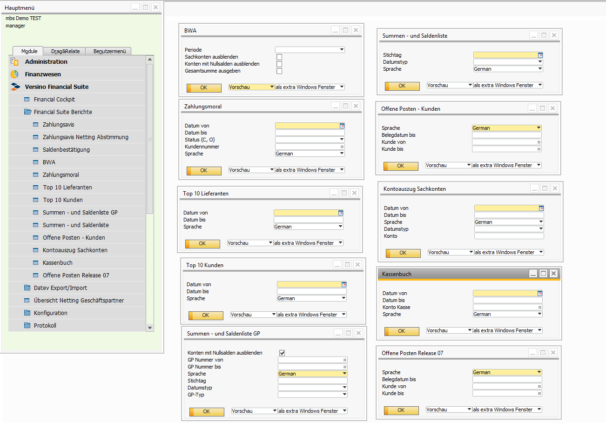
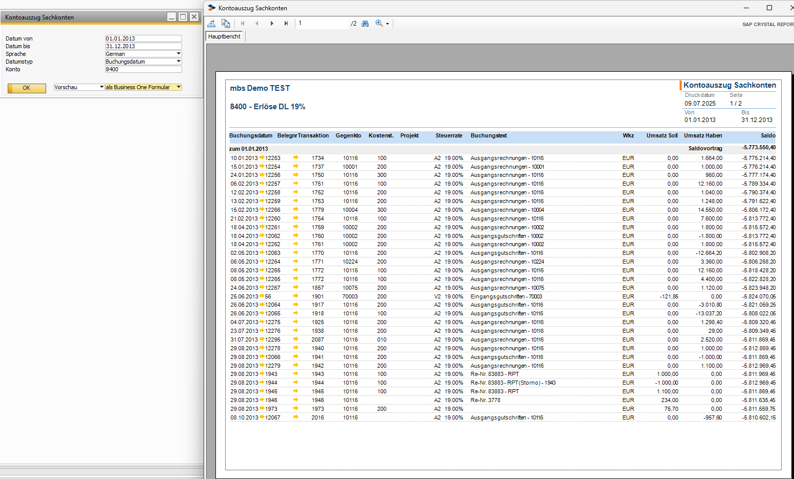
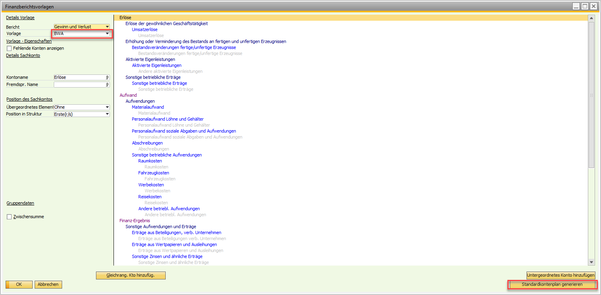

Berichtserweiterungspaket (Reporting)
Überblick
Das Versino Reporting Modul ist das zentrale Berichtssystem der Financial Suite. Es bietet eine umfangreiche Sammlung vorgefertigter Crystal Reports und arbeitet vollständig im Hintergrund, um Ihnen die passenden Auswertungen bereitzustellen. Ein wesentlicher Vorteil ist, dass das Modul automatisch erkennt, ob Sie eine Microsoft SQL Server oder SAP HANA Datenbank verwenden, und die entsprechenden, performance-optimierten Berichte lädt.
Das Modul startet asynchron, ohne die SAP Business One Oberfläche zu blockieren, und erkennt automatisch Ihre Systemsprache. Zugang zu den Berichten: Alle Berichte finden Sie im SAP Business One Menü unter Versino Financial Suite > Financial Suite Berichte.
Hauptfunktionen
Das Modul bietet zwei Arten von Berichten, um unterschiedliche Anforderungen abzudecken: Standard-Berichte für den schnellen Zugriff und Massen-Berichte mit vorgeschalteten Filterdialogen.
Standard-Berichte (direkter Start)
Diese Berichte können direkt gestartet werden und bieten schnelle Auswertungen. Die Filterung (z. B. nach Datum) erfolgt direkt im Crystal Reports Viewer.
- Kassenbuch — Zeigt alle Kassenbewegungen chronologisch mit laufender Saldierung.
- Kontoauszug Sachkonten — Detaillierte Bewegungslisten für ausgewählte Sachkonten.
- Offene Posten Kunden (mit Release 07 Version) — Übersicht über unbezahlte Forderungen mit Fälligkeitsanalyse.
- Summen- und Saldenliste (SuSa) — Kompakte Sachkonten-orientierte Übersicht aller Konten.
- Summen- und Saldenliste GP — Geschäftspartner-orientierte Variante.
- Top 10 Kunden — Ranking nach Umsatzvolumen.
- Top 10 Lieferanten — Ranking nach Einkaufsvolumen.
- Zahlungsmoral — Analyse des Zahlungsverhaltens mit durchschnittlichen Zahlungsdauern.
- BWA — Monatliche betriebswirtschaftliche Auswertung nach Standard-BWA-Schema.

Massen-Berichte (mit Filtern)
Diese Berichte bieten vor dem Start spezielle Filterdialoge, um gezielte Massenverarbeitungen durchzuführen. Das System erstellt für jeden ausgewählten Datensatz eine separate Datei.
- Saldenbestätigung — Erstellt separate Bestätigungsschreiben für beliebig viele Kunden zu einem wählbaren Stichtag.
- Netting Abstimmungen — Dokumentiert durchgeführte Netting-Vorgänge für einen Datumsbereich.
- Zahlungsavis — Erstellt detaillierte Zahlungsavise für einen bestimmten Zahllauf (nur Status "Executed").
Filter-Bedienung
- Datums-Filter: Klicken Sie auf das Kalender-Symbol für die Datumsauswahl.
- Choose-From-List: Lupen-Symbol öffnet die Auswahlliste (z. B. für Geschäftspartner).
- Dropdown: Zeigt automatisch verfügbare Werte (z. B. Zahlläufe).
Ausgabeoptionen
Alle Berichte unterstützen verschiedene Ausgabeformate:
- Vorschau — Anzeige in SAP Business One oder einem separaten Fenster
- Druck — Direkter Ausdruck
- PDF — Export als PDF-Datei
- Excel — Export für weitere Bearbeitung
- Word — Export ins Word-Format
Bei Massen-Berichten werden automatisch individuelle Dateinamen vergeben (z. B. Saldenbestätigung [Kundencode] - [Kundenname].pdf).
Datenbankadaption (SQL Server vs. HANA)
Das System lädt automatisch die richtige Berichtsversion basierend auf Ihrer Datenbank:
- SQL Server: Verwendet optimierte SQL-Abfragen.
- HANA: Nutzt HANA-spezifische Funktionen und In-Memory-Processing für maximale Performance.
Wichtige Standard-Berichte im Detail
Top 10 Auswertungen
Identifizieren Sie auf einen Blick Ihre wichtigsten Geschäftspartner — perfekt für Vertriebs- und Einkaufsanalysen:
- Top 10 Kunden: Sortiert nach Umsatzvolumen
- Top 10 Lieferanten: Sortiert nach Einkaufsvolumen
Zahlungsmoral
Analysiert das Zahlungsverhalten Ihrer Kunden mit durchschnittlichen Zahlungsdauern und Trends. Ideale Grundlage für Mahnstrategien und Skonto-Entscheidungen.
Massen-Berichte im Detail
Saldenbestätigung
Erstellt automatisch Saldenbestätigungen für ausgewählte Kunden zum Stichtag. Filteroptionen:
- Stichtag: Datum für die Saldenermittlung
- Geschäftspartner: Auswahl über Choose-From-List
Das System erzeugt für jeden ausgewählten Kunden eine separate Datei im Format Saldenbestätigung [Kundencode] - [Kundenname].pdf.
Netting Abstimmungen
Dokumentiert durchgeführte Netting-Vorgänge zwischen Geschäftspartnern. Filteroptionen:
- Abstimmungsdatum von/bis: Zeitraum der Netting-Vorgänge
- Geschäftspartner: Dropdown-Auswahl aus Netting-Partnern
Zahlungsavis
Erstellt Zahlungsavise basierend auf dem SAP Business One Zahlungsassistenten. Das System zeigt automatisch nur Zahlungsläufe mit Status "Executed" an, sortiert nach neuesten zuerst.
Integration mit anderen VPS-Modulen
VPS Pro-Rata
Pro-Rata-Buchungen werden in allen relevanten Reporting-Berichten automatisch berücksichtigt — im Kassenbuch, Kontoauszug Sachkonten, in der Summen- und Saldenliste sowie in Bilanz und GuV.
VPS Buchungstext-Konfigurator (JeTextSetter)
Standardisierte Buchungstexte aus dem JeTextSetter erscheinen automatisch in allen Berichten und verbessern die Übersichtlichkeit erheblich — besonders im Kassenbuch und auf Kontoauszügen.
VPS Hauptmodul
Das Reporting-Modul greift auf zentrale Konfigurationsdaten zu (z. B. Steuereinstellungen, Kontenpläne) und passt sich automatisch an die Datenbank-Version (SQL Server / HANA) an.
Anwendung
Standard-Bericht anwenden (z. B. Kontoauszug)
- Navigieren Sie zu Versino Financial Suite > Financial Suite Berichte > Kontoauszug Sachkonten.
- Ein Filter-Dialog öffnet sich. Geben Sie den gewünschten Zeitraum, die Sachkonten ein und den Anzeigetyp (B1-Form oder als externes Windows-Form).
- Klicken Sie auf "OK". Der Bericht wird generiert.
- Nutzen Sie die Export-Funktionen des Viewers, um den Bericht zu speichern.

Massen-Bericht anwenden (z. B. Saldenbestätigung)
- Wählen Sie den Bericht Saldenbestätigung.
- Füllen Sie die Filterfelder im erscheinenden Dialog aus (Stichtag, Geschäftspartner über Choose-From-List).
- Starten Sie die Berichterstellung. Das System erstellt automatisch separate Dateien für jeden ausgewählten Kunden.
Tipps und Fehlerbehandlung
Tipps für die tägliche Arbeit
- Berichtswahl: Nutzen Sie Standard-Berichte für tägliche Routineauswertungen, Massen-Berichte für gezielte gefilterte Analysen.
- Performance: Bei sehr großen Datenmengen schränken Sie die Filterkriterien (z. B. kürzerer Datumsbereich) so weit wie möglich ein.
- Mehrsprachigkeit: Berichtsnamen und -beschreibungen werden automatisch in der SAP Business One UI-Sprache angezeigt.
- Export-Strategie: Exportieren Sie regelmäßig in PDF/Excel für Archivierung und Weiterverarbeitung.
Häufige Probleme und Lösungen
Problem: Ein Bericht ist leer oder zeigt keine Daten an.
Lösung: Überprüfen Sie Ihre Filtereinstellungen, insbesondere den Datumsbereich. Stellen Sie sicher, dass für die gewählten Kriterien tatsächlich Daten in der Datenbank vorhanden sind.
Problem: Massen-Bericht erstellt keine Dateien.
Lösung: Prüfen Sie, ob die Filterkriterien tatsächlich Datensätze zurückliefern. Bei Saldenbestätigungen muss z. B. mindestens ein Geschäftspartner ausgewählt sein.
Problem: Die Berichte starten langsam.
Lösung: Beim allerersten Start eines Berichts nach dem Öffnen von SAP Business One kann die Initialisierung einen Moment dauern. Dies ist normal — nachfolgende Berichte sollten schneller laden.
Problem: Crystal Reports funktioniert nicht oder es gibt eine Fehlermeldung bei der Datenbankverbindung.
Lösung: Stellen Sie sicher, dass die Crystal Reports-Komponenten für SAP Business One korrekt installiert sind. Überprüfen Sie Ihre Datenbankverbindung und starten Sie SAP Business One neu. Bei anhaltenden Problemen kontaktieren Sie Ihren Administrator.
Problem: BWA Report lädt nicht.
Lösung: Stellen Sie sicher, dass die Finanzberichtsvorlage BWA angelegt ist. Sie finden das Menü unter Finanzwesen > Finanzberichtsvorlage. Sollte dies nicht der Fall sein, können Sie diese selbst anlegen (wie im Bild dargestellt). Der Standardkontenplan kann via Button automatisch geladen werden. Bei anhaltenden Problemen kontaktieren Sie Ihren Administrator.
